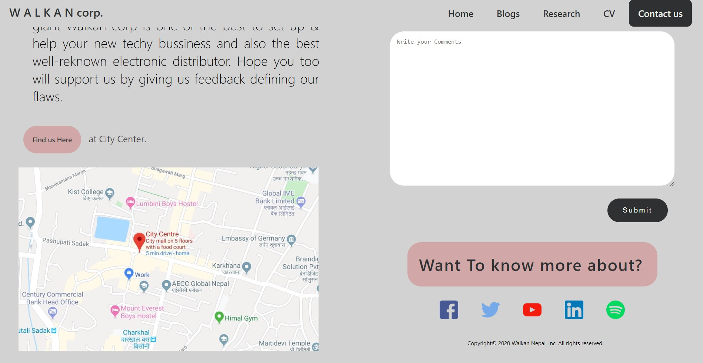

On the above picture, The backgrond of the navigation bar is invisible and the text "welcome on spirit8" is in the picture at centre. So i took some idea from it and made my navigation bar invisible be setting down color.
also i put the quote in the photo at centre by specifying the position and blurred the background image by using filter property. the final result:
The input box from the above picture are rounded at the edge and looks cool. So I took that idea and made my each input boxes rounded at the edge by setting the border radius. The final result:
The navigationbar from the above pics has multiple layouts. A text 'Logobakery' is being inside the navbar at the end of navbar items that are placed at right/left. So I took that idea and made a textual bold logo 'W A L K A N corp' and made space between the items
by setting up right padding of that textual logo. The fianl result:
The overall layout of above picture is quite attractive. so, i formulate the layout idea in my page using many div tags, padding, margin etc. and changed some of the elements by using fonts, sizes, colors, background colors & border color.
I resized my photo and made it circular by setting up border radius. The final result:
A line at bottom is seen in each row from the above picture and looks amazing. so i too created a line at bottom of each row of the table which is in my page. I made line at each row of the table by using a specfic property call the border-bottom and setting up values like pixel and color.
The final result:
In the above picture, there is a map specifying the location of the college which looks much clean and gives a lot information. The map can be mentioned inside the webpage by using javascript, but its too complex for begginer like me. So, i took a screenshot of the location and mentioned it in along with the location address at the top.
The final result:

Copyright© 2020 Walkan Nepal, Inc. All rights reserved.